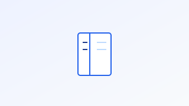
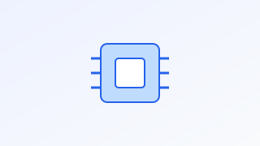
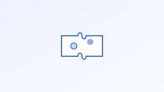
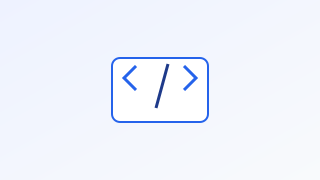
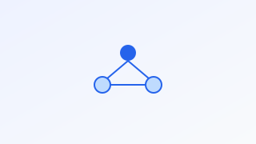
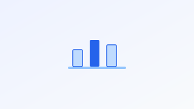
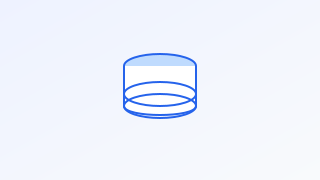
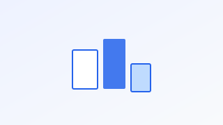

Erhvervsinformatik til EUD/EUXBusiness Informatics for EUD/EUX
KapitlerChapters

i
IntroduktionIntroduction

1
Den digitale udviklingThe digital development
2
Sikkerhed og adfærdSafety and Conduct

3
Digitale artefakterdigital artefacts
4
DesignudviklingDesign development

5
ProgrammeringProgramming

6
Netværksarkitekturnetwork architecture

7
DataData

8
DatabaserDatabases

9